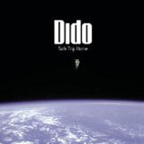

"I am the sound of modern conflict."
Dido, BBC News entertainment interview in 2013
In 1995, Dido began recording demo tracks which were put together on a collection entitled Odds and Ends and sent out by Nettwerk management. Nettwerk had signed her after she was brought to their attention by her collaborations with Faithless, the UK dance act spearheaded by her brother, Rollo Armstrong (Dido co-wrote and provided vocals for album tracks, such as "Flowerstand Man" and "Hem of His Garment"). The collection was released by Nettwerk on CD-R acetate in 1995 and featured a mixture of finished productions and demo versions which she later considered for release on her 1999 debut album, No Angel. Odds and Ends brought her to the attention of "A and R" Peter Edge at Arista Records, who signed her in the USA in late 1996, and negotiated a co-sign deal with her brother's independent record label, Cheeky Records.[18] Of the tracks included on Odds and Ends, "Take My Hand" was included on all editions of No Angel as a bonus track; "Sweet Eyed Baby" was remixed and renamed to "Don't Think of Me", while "Worthless" and "Me" were released exclusively on the Japanese edition. Peter Leak became Dido's manager during the recording of No Angel after Edge played some of the in-progress recordings and been "blown away" by them
Albums
No Angel

Release year:1999
Genre:Rock
Track Listing:
- Here With Me Watch Here With Me
- Hunter Watch Hunter
- Don't Think of Me
- My Lover's Gone
- All You Want Watch All You Want
- Thank You Watch Thank You
- Honestly OK
- Slide
- Isobel
- I'm No Angel
- My Life
- Take My Hand [*]
Life for Rent
Release year:2003
Genre:Rock
Track Listing:
- White Flag Watch White Flag
- Stoned
- Life for Rent Watch Life for Rent
- Mary's in India
- See You When You're 40
- Don't Leave Home Watch Don't Leave Home
- Who Makes You Feel
- Sand in My Shoes Watch Sand in My Shoes
- Do You Have a Little Time
- This Land Is Mine
- See the Sun
Safe Trip [Del]

Release year:2008
Genre:Rock
Track Listing:
- Don't Believe in Love
- Quiet Times
- Never Want to Say It's Love
- It Comes and It Goes
- Look No Further
- Us 2 Little Gods
- The Day Before the Day
- Let's Do the Things We Normally Do
- Burnin Love
- Northern Skies
- For One Day
- Summer
- Northern Skies (Rollo Mix)
- Making of 'Safe Trip Home' (CD enhancement)
Greatest Hits
Release year:2013
Genre:Rock
Track Listing:
- Here with Me
- Thank You
- Hunter
- White Flag
- Life for Rent
- Don't Leave Home
- Sand in My Shoes
- Don't Believe in Love
- Quiet Times
- Grafton Street
- Everything to Lose
- Let Us Move On
- No Freedom
- End of Night
- One Step Too Far (Radio Edit)
- Stan
- If I Rise
- NYC (previously unreleased)
Greatest Hits [Del]
Release year:2013
Genre:Rock
Track Listing:
- Here with Me
- Thank You
- Hunter
- White Flag
- Life for Rent
- Don’t Leave Home
- Sand in My Shoes
- Don’t Believe in Love
- Quiet Times
- Grafton Street
- Everything to Lose
- Let Us Move On
- No Freedom
- End of Night
- Blackbird
- One Step Too Far
- Stan
- If I Rise
- Here with Me (Chillin' with Family Mix)
- Thank You (Deep Dish Remix)
- Hunter (MJ Cole Remix)
- White Flag (Timbaland Remix)
- Life for Rent (Skinny 4 Rent Remix)
- Sand in My Shoes (Above and Beyond Remix)
- Don’t Believe in Love (Denis Ferrer Remix)
- No Freedom (DJ Kobra Remix)
- End of Night (Cedric Cervais Remix)
- Go Dreaming (Mantronix Remix)
- Blackbird (Moguai Remix)
- NYC
- Northem Skies (Rollo Version)
Girl Who Got Away [Del]
Release year:2013
Genre:Rock
Track Listing:
- No Freedom
- Girl Who Got Away
- Let Us Move On
- Blackbird
- End of Night
- Sitting on the Roof of the World
- Love to Blame
- Go Dreaming
- Happy New Year
- oveless Heart
- Day Before We Went to War
- Let Us Move On
- All I See
- Just Say Yes
- Let's Run Away
- Everything to Lose (Armin Van Buuren Remix)
- Lost
Girl Who Got Away
Release year:2013
Genre:Rock
Track Listing:
- No Freedom
- Girl Who Got Away
- Let Us Move On
- Blackbird
- End of Night
- Sitting on the Roof of the World
- Love to Blame
- Go Dreaming
- Happy New Year
- oveless Heart